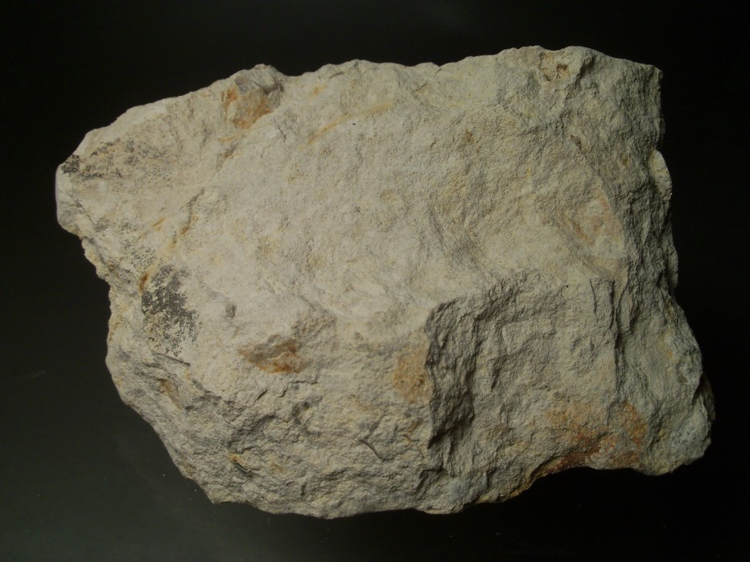

A VOICE THAT SOUNDS LIKE A MILLION MINISCULE SKELETONS
(AND A SCRATCH ON A BLACKBOARD)
In the same way that chalk is a porous material, having minute cracks and holes through which air, gas, or liquid can pass, I want to take a porous approach to my writing and structure of this essay.  Chalkstone In Danish, the word kalk, directly translating to chalk, encompasses both chalkstone and limestone. 3 3. Chalk is a variety of limestone composed mainly of calcium carbonate. Definition found on geology.com, accessed 05/02/2024. Therefore, when I write chalk, I am talking about kalk, meaning it could be either of the two. My first statement could in that sense suggest, that I do not intend on serving airtight opinions or facts, impenetrable by no argument, but that I instead wish to allow myself to build up the text with sediments of language and comparisons, in a way that could make sense but also easily could be picked apart.
After all, it is the easy picking apart of chalk, due to its porous
and friable properties, that leads to discovery of geological
knowledge and stories of past life. Calcium carbonate, a mineral with
a low particle density and the main component of chalk, is the reason
behind those characteristics.4
If, for that reason, I gave chalkstone the role of a storyteller, its
voice would be a million microscopic skeletons. Coccoliths, as they
are called, who upon death collapse into their constituent parts, have
been drizzling down on the sea floor through millions of years. The
calcium derived from these plankton shells, transforms into sediments
of lime mud which, through pressure and heat, turns into stone.5
As a little lump in your teacher's hand, the word chalk is commonly associated with a different kind of storytelling. Bright white letters on a dark background, constantly added and wiped away, swiftly moving from information to information. The value of chalk and limestone is reduced to its societal employment, as a transmitter of essential information from teacher to student on a blackboard, as well as an important part of manufactured construction materials. As the little white piece in your teacher's hand slowly vanishes, giving its life to conjugation of French verbs, one after the other, it is easy to forget the knowledge and stories that chalk contains on its own.
ASHES TO ASHES, BONE TO STONE
This small piece of writing-chalk might have been extracted directly
from a mass extinction novel.
 Stevvns Klint coastal profile (from lex.dk)
From
Stevns Kridtbrud, a chalk quarry located on the southeastern coast of
the Danish island Zealand, chalk has been mined for blackboard-chalk,
amongst other utilizations, for decades. In that same bryozoan
limestone, that dominates the subsoil of Stevns Municipality, a dark,
daunting layer of fish clay interrupts the peaceful white-yellow
sediments. The structure of the strata is clearly seen in the coastal
profile along Stevns Klint.7
Stevvns Klint coastal profile (from lex.dk)
From
Stevns Kridtbrud, a chalk quarry located on the southeastern coast of
the Danish island Zealand, chalk has been mined for blackboard-chalk,
amongst other utilizations, for decades. In that same bryozoan
limestone, that dominates the subsoil of Stevns Municipality, a dark,
daunting layer of fish clay interrupts the peaceful white-yellow
sediments. The structure of the strata is clearly seen in the coastal
profile along Stevns Klint.7
Here, the fish clay portrays itself as a foreign, decorative stripe on
the dramatic cliff, hinting at the mystery of extraterrestrial origin
it contains. Luis Alvarez and Walter Alvarez, the father-son
researcher duo from California, who investigated these dark stripes in
different geographic locations, became the geological detectives to
solve the mystery.8
One 65 million years ago, the sky was filled with deadly glowing
microtektites, raining down on Earth like beautiful shooting stars
10
Iridium is a metal that occurs in higher concentrations in meteorites
but only in extremely low concentrations in Earth’s crust, therefore
standing out as Iridium anomalies, when discovered in high
densities.12
“...And then came the human.” The default ending to the story that
people seem to jump to. Tove Damholt, a geologist experienced with
spreading the geological word of the cliff, urges that the mass
extinction of the Mesozoic era resulted in different, equally
improbable forms of life and species to evolve.13
Just as Chicxulub left behind a thin layer of stratospheric dust, the chalk leaves behind a dusty stain on the blackboard, increasingly clouding the pure darkness every time a sentence gets wiped away. Removed quickly, to give place to another sentence, it stays vaguely visible in the background of new words, as a reminder that they are part of the same whole. That no one would understand the new sentences, was it not for the previous ones. When something vanishes from the surface, it does not cease to exist. “Dust to dust”... Commonly used to describe how everything disappears. But dust is not nothing. And not everything turns to dust. Some things turn to stone.
Noticeably, skeletal remains – bones, are more likely than any soft
organic material to defy decomposition and to fossilize. Bone can
escape decay thanks to calcium, which clings onto the main component
of the bone structure, collagen, like a protective raincoat,
decelerating the decomposition process, giving it time to fossilize,
should it land in the right place. It is the same mineral, calcium,
derived from micro skeletons, that forms into chalk. Should the bone
be lucky enough to have been buried under chalk sediments, it will
never decay.14
SEDIMENTARY CLOUDS AND STRATACENTRES
Humans are amongst the lucky species possessing their own set of
bones. No need for any Silence of the Lambs sort of body part thievery
from an unlucky bony being landing in our dark underground pit.17
Living through the past decade has felt like a never-ending
confrontation with the ‘nothing is ever deleted from the internet’
chant. We push delete, but the cloud, originally intended to symbol
calm connectivity, shows its true colours as an out-of-reach hostage
taker of information, flying around too high up for us to catch and
destroy it. As writers such as Niklas Maak have pointed out, the
physical properties of The Cloud, are rather opposing to its name.
18
 It is existing on the ground, as concrete blocks, whose
infrastructures consist of extracted underground material in the form
of millions of metallic building-blocks, as described by Füsun
Türetken in her essay Where they hide the clouds.
19
It is existing on the ground, as concrete blocks, whose
infrastructures consist of extracted underground material in the form
of millions of metallic building-blocks, as described by Füsun
Türetken in her essay Where they hide the clouds.
19
Thinking of The Cloud in layers of strata, could in parts resemble
Benjamin Bratton's idea of the Stack, a new nomos used to describe The
Cloud, “not only according to the horizontal subdivision of physical
sites by and for states, but also according to the vertical stacking
of interdependent layers on top of one another(...)”.20
But, understanding the past has perhaps always been a vertical act? At least in the literal sense of ‘digging down’ from the strata of the sky into the strata of the subsoil to excavate resources and to find traces of evolution. If I, for the purpose of discussing specifically what will remain, name the Cloud the Rock instead of the stack, the attention should shift from the geopolitical specifics of our society to the leftovers of it. Imagining future generations making archaeological excavations down into the thick strata of all the data we leave behind adds a new importance to our understanding of it, like a window into the stories of our time. Following this thought, the Cloud will take a similar role of a storyteller as the one I gave chalkstone. Instead of bones in chalk sediments, will it then be the ‘skeletons’ of our digital lives that will be ‘dug up’ as valuable fossils? To answer that question, and to be able to compare our digital footprint to our skeletons, we would have to be assured that data is as likely to defy decomposition as bone. Furthermore, we would have to limit the idea of who we leave something behind for to future generations of humans. Who is to say whether species beyond the Anthropocene would know how to extract meaningful data from these remains?
THE DEEP TIME DISREGARD OF SOFT PARTS
The Iridium contained in a fine layer in the chalk sediments, tells a
story that is more than 60 million years old. For Alvarez, that story
is part of deep improbability, a term taken from his big history
teachings, referring to how incredibly unlikely every life is, in a
cosmic, deep time scale: “And when you think that these extraordinary
odds are multiplied with every generation back to the beginning of
sexual reproduction, you see that each of us is unlikely to a degree
that utterly defies imagination.”23
Furthermore, when thinking of The Cloud as the new Rock, a time
capsule containing sediments of digital fossils, we cannot ignore the
formation of it, which is contrary to the formation of natural rock.
Where chalkstone is formed of plankton, peacefully landing on the
seabed upon death, the digital rock is formed of minerals, forcefully
extracted through energy-intense and polluting practices.24
24. David S. Abraham, ”The Elements of Power: Gadgets, Guns, and
the Struggle for a Sustainable Future in the Rare Metal Age”, Yale
university Press 2017.
Instead of recycling minute plankton skeletons, it hollows out the
skeleton of the earth. Basing her concept in earlier findings on
chalk, Füsun Türetken coins the term ‘Gaiaporosis’ by stating
“Simultaneously, extractivist economies and mining hollow out
landscapes leaving the planet’s skeleton in a malady that I term
Gaiaporosis: a conjoining of the disease osteoporosis, which leads to
a deterioration of the bone structure in its density and minerals, and
Lovelock’s Gaia.”25
With Earth then left in a state of Gaiaporosis in a future scenario
where the minerals and resources on which data centers rely are
exhausted, the content of the Cloud shifts back into being meaningless
fluff. Witnessing the extents that economies go to, to expand the
infrastructure of big data, confirms the Zizekian remark of it being
easier to imagine the end of the world than the end of capitalism.27
In this perspective, perceiving the Cloud as a storyteller for future
generations becomes somewhat preposterous, especially considering how
it is simultaneously partaking in the destruction of those
generations. The resources it relies on are not endless, and its
actual substance, data, might not be understood or preserved beyond
humanity. More likely to preserve through millennia, is the physical
constructs of the cloud. The concrete walls of the data center
buildings, the metals of the microchips and the circuit boards. In his
book Footprints: In Search of Future Fossils, David Ferrier
reflects on the geological character of cities with the intention of
understanding how they will be remembered in the rock record of the
deep future.29
 Plastic rocks found on Hawaii by reasearchers at the university of Western Ontario
His reflections apply to the constructions of the Cloud as well, as
those are built with similar construction materials. He describes how
concrete, plastic and rare metals will transform and fossilize through
thousands and millions of years, turning into layers of strata, buried
deep under future sediments. Not only objects, but also traces of our
movements, like underground subway tracks protected against erosion,
will fossilize. The leftovers of rare earth metals, formed millions of
years before our time, suddenly appearing in our 21st-century
stratigraphy, will hint at our vertical extractive movements.30
Plastic rocks found on Hawaii by reasearchers at the university of Western Ontario
His reflections apply to the constructions of the Cloud as well, as
those are built with similar construction materials. He describes how
concrete, plastic and rare metals will transform and fossilize through
thousands and millions of years, turning into layers of strata, buried
deep under future sediments. Not only objects, but also traces of our
movements, like underground subway tracks protected against erosion,
will fossilize. The leftovers of rare earth metals, formed millions of
years before our time, suddenly appearing in our 21st-century
stratigraphy, will hint at our vertical extractive movements.30
Concerning data centers, the leftovers of the infrastructures might hint at a network or a system, but as the circuit breaks and electricity leaves, the information vanishes. Its walls, containing these infrastructures, are constructed with concrete, in which chalk is an essential component due to its binding properties. Such minerals in construction materials are also what enables them to defy decomposition, just like the minerals in bone. Following that thought, only the bones, the skeleton, of The Cloud is left.
It is the lack of minerals in the soft organic parts of living
organisms, that cause them to decay faster.31
480 MILLION YEARS OF EXOSKELETAL ARCHITECHTURE (EARTH AS A BODY WITHOUT ORGANS)
As we consider how our skyscrapers will fossilize in the deep future,
it is relevant to note that similar fossilized buildings from the deep
past are left in sediments for us to find today. Zooids, tiny
calcifying animals, have been constructing their exoskeletal apartment
blocks, bryozoans, since the early Ordovician age.32
 Bryozoan fossils from Tahoe lake (geokansas.ku)
Living in each their pod of a single calcium construction, the zooids
are interdependent on each other for survival. As such, building walls
of calcium-rich materials to house societies is no human invention,
but rather a development of exoskeletons, as seen in many species.
"About eight thousand years ago, human populations began mineralizing
again when they developed an urban exoskeleton” writes Manuel Delanda
in A Thousand Years of Nonlinear History.33
Bryozoan fossils from Tahoe lake (geokansas.ku)
Living in each their pod of a single calcium construction, the zooids
are interdependent on each other for survival. As such, building walls
of calcium-rich materials to house societies is no human invention,
but rather a development of exoskeletons, as seen in many species.
"About eight thousand years ago, human populations began mineralizing
again when they developed an urban exoskeleton” writes Manuel Delanda
in A Thousand Years of Nonlinear History.33
In the coastal profile of Stevns Klint, the stratified layers of chalk
sediments seem, by first glance, to be transfixed, locked into each
their temporal enclave. In that sense, vertically territorialized, as
deep history preserved in the form of a time-specific hierarchy.
Taking a step closer to the cliff, Tove Damholt points me to the small
traces that run from one layer to another, smudging their perfect
vertical division and breaking the illusion of temporal isolation. The
traces, reminiscent of the rhizomatic connections within Deleuze and
Guattari's framework, hint at an interconnectedness between different
ages and epochs. Building upon the concept first presented by Deleuze
and Guattari, DeLanda's theory of assemblages offers a lens through
which the stratigraphic complexity of the cliff face could be
interpreted.35
As I remember the porosity of the chalkstone material, the traces on the cliff face begin to resemble pores, running through it, turning the entire coastal profile into a porous painting. It appears not only to be the material in itself, but the entire narrative chalk contains that is porous.
EARTH AS A BODY WITHOUT ORGANS – TIME AS A SKELETAL CYCLE
If chalkstone tells its stories through the voice of
minuscule plankton skeletons, an array of different bony substances is
simultaneously seeping in through the cracks of the porous narrative.
From plankton skeletons of chalk-formation to the skeletons in bodies,
and from the hollowed-out skeleton of Earth in Gaiaporosis, to the
exoskeletons of our digital information, the story of chalk appears to
take form as a skeletal cycle, encouraging us to remember that our own
bones, our skeletons, are the part of us that most easily crosses the
threshold into the world of rocks.37
The traces between layers in the cliff, the chalk dust that stains the blackboard, and the particles that cover Earth after catastrophes all hint at the interconnected nature of what we are, what is left behind and what will come. It is this cycle of dynamic, non-linear flows and connections that can be found as the story of chalkstone.